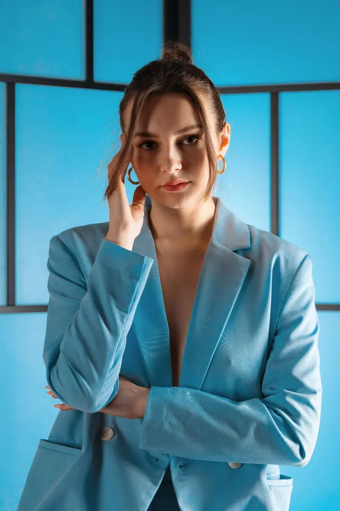
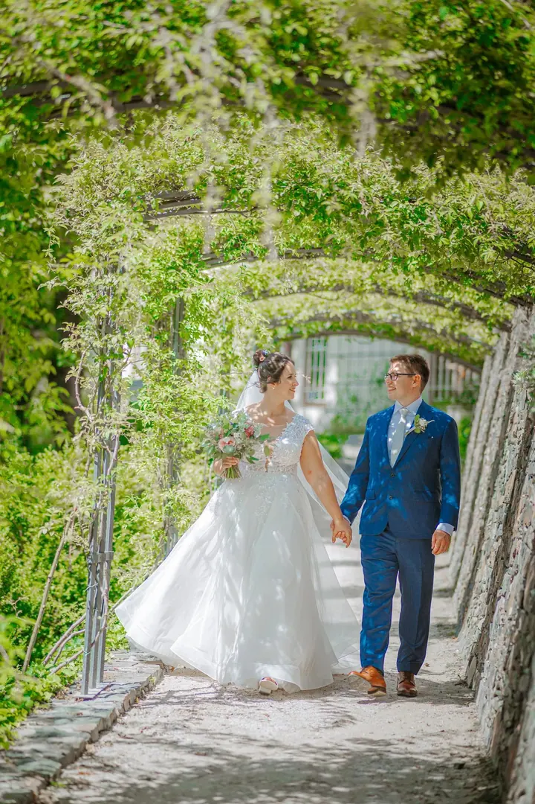

01 / 04
Svatby
Svatbu fotím přirozeně a citlivě, aby fotky vyprávěly váš příběh i po letech. Před focením se snažím poznat vás i vaši představu a hlídám detaily, emoce i drobné okamžiky.
Zeptat se na termín→



Svatby a portréty s citem pro moment
Zeptat se na termín →(01) Ahoj
Jmenuji se David Marek a jsem vystudovaný fotograf. Fotím svatby , portréty i firemní akce a produkty . Každé focení beru jako spolupráci, protože jen když se cítíte uvolněně, vznikají ty nejupřímnější záběry.
(02) Co fotím
01 / 04
Svatbu fotím přirozeně a citlivě, aby fotky vyprávěly váš příběh i po letech. Před focením se snažím poznat vás i vaši představu a hlídám detaily, emoce i drobné okamžiky.
Zeptat se na termín→02 / 04
Ženské a mužské portréty, párové focení i modeling. Snažím se, abyste se se mnou cítili pohodlně a uvolněně, protože jen tak vznikají upřímné záběry.
Zeptat se na termín→03 / 04
Firemní akce, koncerty, maturitní plesy i sportovní zápasy. Fotím je s citem pro moment, aby z nich zůstala živá atmosféra.
Zeptat se na termín→Dále nabízím
Produktové fotky a fotky prostor pro firmy i velké značky. Podklady, které se hodí na web, sociální sítě i do kampaní.
↗(03) Portfolio
Kliknutím fotku zvětšíte · fotografie jsou ilustrační
(04) Postup
Od první zprávy po hotovou galerii.
Krok 1 z 4
Napíšete mi, co chystáte, a já se vám obratem ozvu. Než začneme fotit, snažím se poznat vás i vaši představu.
Krok 2 z 4
Společně probereme místo, styl a to, na čem vám nejvíc záleží, aby fotky odpovídaly vám i atmosféře dne.
Krok 3 z 4
Focení beru jako spolupráci. Hlídám detaily, emoce i drobné okamžiky a snažím se, abyste se cítili uvolněně.
Krok 4 z 4
Z focení vyberu ty nejlepší záběry, pečlivě je upravím a předám vám je hotové k používání.

Dobrá fotka vzniká citem pro moment.
(05) Za objektivem
Na dobré známky jsem nikdy nebyl a namalovat jsem dokázal tak maximálně sluníčko v rohu papíru. O to větší byl můj úžas, když jsem poprvé vzal do ruky foťák svého bratra a podařilo se mi zmrazit čas. Byla to láska na první zmáčknutí spouště.
Vystudoval jsem fotografii a audiovizi na vysoké škole. Naučil jsem se tam techniku a kompozici, ale hlavně jsem pochopil, že dobrá fotka nevzniká jen správným nastavením, ale citem pro moment. Fotím přes sedm let a za tu dobu jsem fotil pro jednotlivce, firmy i velké značky, třeba pro Palác Lucerna, Cupru nebo Bang & Olufsen.
Fotografování beru naprosto vážně, ale nikdy neztrácím lidský přístup. Mimo focení sbírám staré analogové foťáky, poslouchám jazz a swing třicátých let a učím se španělsky. Kdo ví, třeba vám jednou nafotím svatbu i v Mexiku.
David
David Marek · Svatební, portrétní a komerční fotograf
Hlavně svatby a portréty, ale také páry, eventy, maturitní plesy, sport, produkty a reality. Fotil jsem pro jednotlivce, firmy i velké značky.
Vůbec ne. Snažím se, aby se se mnou lidé cítili pohodlně a uvolněně, protože jen tehdy vznikají ty nejupřímnější záběry.
Ano. Před focením se snažím co nejlépe poznat vás i vaši představu, abych dokázal vytvořit fotky, které odpovídají vašemu stylu.
Vyplňte formulář na webu nebo mi napište e-mail či zavolejte. Ozvu se vám obratem a domluvíme se na podrobnostech.